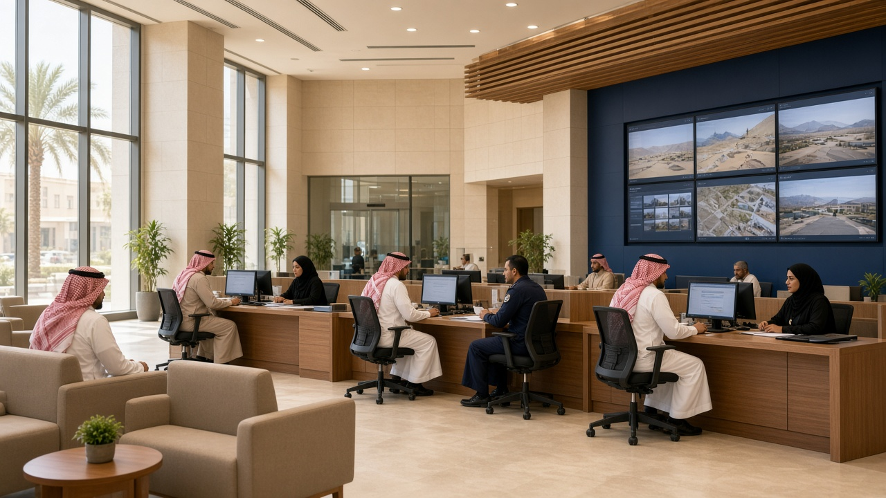

المشاريع / وكالة التحول الرقمي / HL-2024-001
وكالة التحول الرقمي · إدارة التطبيقات والمنصات
منصة الخدمات البلدية الموحدة
بوابة واحدة لخدمات المستفيد من الرخص والاستعلامات والبلاغات.

وصف المشروع
جمعت المنصة خدمات الأمانة الأكثر طلبًا في واجهة عربية موحدة، وأصبح لكل بلاغ رقم مرجعي واحد. أُغلق المشروع بعد استقرار التشغيل وإيقاف القنوات الورقية الموازية.
سجل التحديثات
-
100٪
إغلاق المشروع بعد استقرار البوابة وانتقال البلاغات إلى الرقم المرجعي الموحد.
الموقع
حي النقرة · 27.5318 , 41.7064